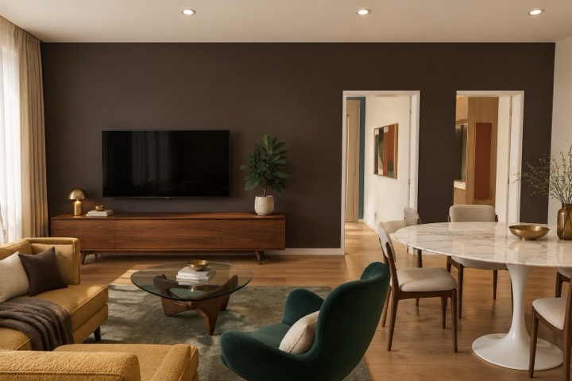
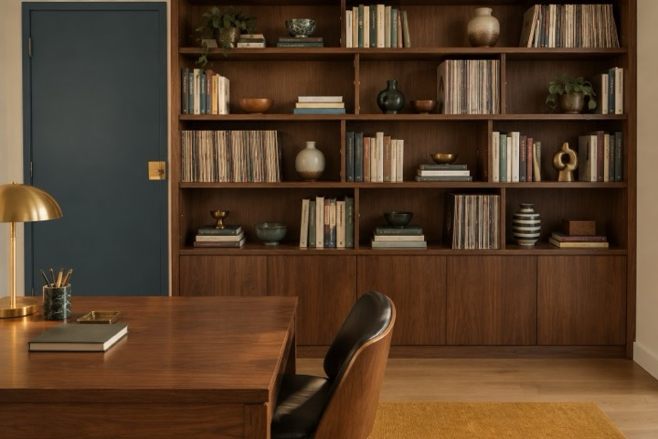
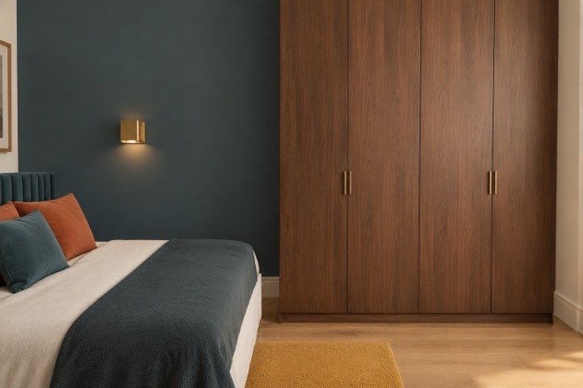
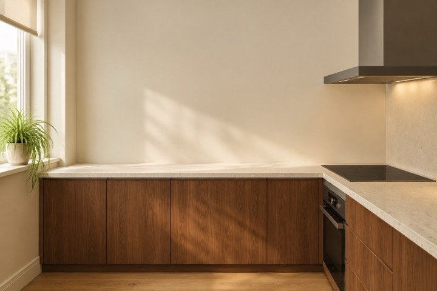

Две смежные квартиры с общим тамбуром становятся одной: гостиная-столовая с балконом, кабинет-библиотека, мастер-спальня с ванной. Стиль — середина века и ар-деко.
Альбом этого проекта целиком — Квартира 101 м² · ретро с авторской мебелью: 134 листа, результат проверки и реестр открытых вопросов.
Проём в межквартирной стене и один вход из тамбура. Несущие колонны и ригель не трогаем; нужны план БТИ и техзаключение — пункт стоит в реестре открытых вопросов.
Санузлы и кухня остались там, где они по обмеру; кухня — у газовой трубы.
Подоконники по обмеру — 720…825 мм от пола, поэтому остекление принято многослойным безопасным.
Середина века на 65 % и ар-деко на 35 %: орех и тик, латунь, изумрудный бархат, горчичное букле, терраццо. Коды цвета — только проверенные.
Кресло-лаунж с оттоманкой, мраморный стол-тюльпан, журнальный стол Noguchi, кресло-яйцо, буфет на конических ножках, стеллаж-библиотека из ореха, кровать ар-деко в изумрудном бархате. Модели уточняются с заказчиком.
Вид сверху 3D и 25 кадров стен. Их сверяли с упрощённой объёмной моделью, 12 переснимали; после разбора практика (22.10.2026) кадры сверяются с самим планом по чек-листу — эту сверку они ещё не прошли. Где кадр и чертёж расходятся, верен чертёж.
Нажмите на лист — он откроется крупно, и к нему можно оставить правку голосом. Так же будет с вашим проектом.




Кадры из альбома для заказчика этого проекта. С планом по чек-листу (мебель, двери, сантехника, свет) они ещё не пересверены — мебель и детали могут отличаться от листов; где расходятся, верен чертёж.
Эти пункты стоят в реестре открытых вопросов альбома; пока они не закрыты, на листах стоит пометка «ПРЕДВАРИТЕЛЬНО» — подробности на странице альбома.
Не верьте на слово даже нам: рядом таблица, где то же самое разложено против планировщиков, студий и бюро. А бриф — основное — около 5 минут, дополнительные вопросы — по желанию, когда решите.
Автор проекта — дизайнер-архитектор Кырлан Александр. Фамилия автора стоит в основной надписи каждого листа, телефон — на странице контактов.